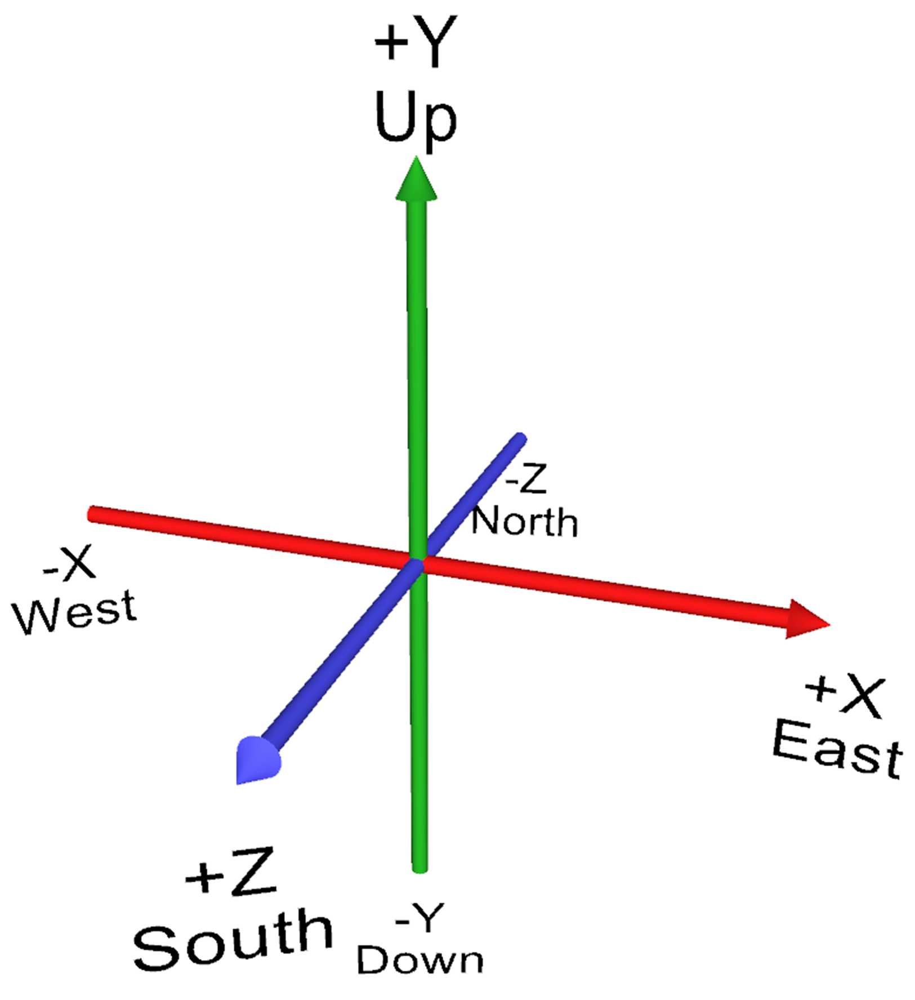

| 16 Directory Summaries |
270 X3D Models |
 Chapter 01 Technical Overview Chapter 01 Technical Overview
|
|
| Chapter 02 Geometry Primitives
Shape nodes can contain one geometry node and one Appearance node.
Geometry primitives include the
Box,
Cone,
Cylinder,
Sphere
and
Text nodes.
Each is placed individually inside a
Shape
node.
Text nodes are further configured by
FontStyle nodes.
The supporting
Chapter 2 slideset
and course videos
(NPS,
YouTube)
for X3D for Web Authors are available online via
X3dGraphics.com.
|
|
Chapter 03 Grouping
|

|
Grouping nodes help to organize the scene graph, can establish relative coordinate systems,
and can contain most other kinds of X3D nodes.
Grouping nodes include the
Anchor,
Billboard,
Collision,
Group,
StaticGroup,
Switch
and
Transform
nodes.
The
Inline
node is also similar since it adds nodes into the current scene that loaded from another X3D scene, retrieved
via a local or online url address.
The supporting
Chapter 3 slideset
and course videos
(NPS,
YouTube)
for X3D for Web Authors are available online via
X3dGraphics.com.
Also available:
X3D Scene Authoring Hints
for
Coordinate Systems,
Inline Scenes,
Scale Factors
and
URL Links.
|
|
|
Chapter 04 Viewing Navigation

|
Authors can design scenes to help users navigate to Viewpoints of interest,
and also create user-selectable geometry links using an Anchor (just like HTML).
Viewpoint
nodes are the primary means for users to explore a scene.
NavigationInfo
nodes enable different user-interaction styles (FLY, WALK, EXAMINE etc.) as appropriate.
Only one Viewpoint and one NavigationInfo node can each be active a time,
with order of selection controlled via a binding stack.
The supporting
Chapter 4 slideset
and course videos
(NPS,
YouTube)
for X3D for Web Authors are available online via
X3dGraphics.com.
Also available:
X3D Scene Authoring Hints: Viewpoints and Navigation.
|

|
|
|
| Chapter 05 Appearance Material Textures
|
|
| Chapter 06 Geometry Points Lines Polygons
Numerous X3D nodes are available for presenting points, lines, and a variety of polygonal meshes.
Many kinds of geometry can be created using
PointSet,
LineSet,
IndexedLineSet,
IndexedFaceSet,
ElevationGrid
and
Extrusion
nodes.
Each is placed individually inside a
Shape
node.
Geometric properties are controlled by
Color,
ColorRGBA,
Coordinate,
CoordinateDouble,
Normal,
TextureCoordinate,
TextureCoordinateGenerator
and
MultiTextureCoordinate
nodes.
The supporting
Chapter 6 slideset
and course videos
(NPS,
YouTube)
for X3D for Web Authors are available online via
X3dGraphics.com.
Also available:
X3D Scene Authoring Hints: Meshes.
|
|
| Chapter 07 Event Animation Interpolation
Event values can be generated through TimeSensor, ROUTE and interpolator chains to create animation effects in a scene graph.
Strong typing requirements ensure that only valid values are allowed to modify the scene graph.
The
TimeSensor
node produces output stimulus events that track the passage of time intervals using the computer clock.
Event animation and interpolation is accomplished by
ROUTE
connections that pass events between nodes.
Strictly typed interpolation values are produced by
ScalarInterpolator,
ColorInterpolator,
PositionInterpolator,
PositionInterpolator2D,
OrientationInterpolator,
NormalInterpolator,
CoordinateInterpolator,
and
CoordinateInterpolator2D nodes.
Authors can use a
10-step algorithm checklist
(with example diagram)
as an event-animation design pattern that helps build consistent event-routing chains.
The supporting
Chapter 7 slideset
and course videos
(NPS,
YouTube)
for X3D for Web Authors are available online via
X3dGraphics.com.
|
|
| Chapter 08 User Interactivity
|
|
| Chapter 09 Event Utilities Scripting
|
|
| Chapter 10 Geometry 2D
|
|
Chapter 11 Lighting Environmental Effects

|
|
Light nodes make the appearance of geometry visible and viewable in a scene.
Lights illuminate geometry in a scene relative to the user's view.
Lighting nodes include
DirectionalLight,
PointLight,
SpotLight,
and the active
NavigationInfo
headlight (which points along the user's viewing direction).
Environmental effects include
Background,
TextureBackground,
Fog
and
LocalFog.
Each set of light nodes, NavigationInfo nodes, background nodes and fog nodes are bound on a separate binding stack,
meaning that only one of each can be active at a time.
The supporting
Chapter 11 slideset
and course videos
(NPS,
YouTube)
for X3D for Web Authors are available online via
X3dGraphics.com.
|
|
|
| Chapter 12 Environment Sensor Sound
|
|
| Chapter 13 Geometry Triangles Quadrilaterals
|
|
| Chapter 14 Prototypes
Prototypes let authors define a new X3D node made up of other X3D nodes,
extending the language for any scenes in new and interesting ways.
X3D extensibility includes a tremendous capability:
authors can create prototype declarations and instances to define new X3D nodes.
This is a powerful feature that puts the full power of this graphics language in the hands of Web authors.
Prototype templates are themselves built using
ProtoDeclare
definitions or corresponding
ExternProtoDeclare
references.
ProtoDeclare field definitions are found in the
ProtoInterface
tag, which can include multiple
field
declarations that define a name, initial value (if appropriate),
accessType
(inputOnly, outputOnly, initializeOnly and inputOutput)
and
type
for each field.
The
IS
and
connect
statements allow an internal field inside the ProtoBody to directly relay values and events via the exposed ProtoInterface field.
The node type of each ProtoDeclare is defined by the first node inside the
ProtoBody
declaration.
Copies of a new node are created by name with
ProtoInstance
nodes.
Default values for ProtoInstance fields can be overridden with
fieldValue
initializations.
A ProtoInstance node can replace any other node in the scene graph having the same node type.
The supporting
Chapter 14 slideset
and course videos
(NPS,
YouTube)
for X3D for Web Authors are available online via
X3dGraphics.com.
Also available:
X3D Scene Authoring Hints
for
Inline Scenes and Prototype Templates
and
URL Links.
|
|
Chapter 15 Metadata
")
|
Metadata is used to identify the data relevant to X3D scenes and shapes, enabling the possibility of
further correlation, discovery and Web-based mashups to occur.
Metadata
is about forms of data relating to other data.
For example, metadata can provide a variety of information regarding a document such as author, date revised, relevant key words, etc.
As another example, metadata might annotate X3D CAD geometry to provide key references such as part numbers, documentation references, inventory links, etc.
Simple name=value paired information can be provided in document
<head>
and
<meta>
tags, just like in HTML.
Furthermore, typed metadata information can annotate any X3D node, either for use offline or for queries within an active scene graph at run time.
X3D metadata nodes include
MetadataBoolean,
MetadataDouble,
MetadataFloat,
MetadataInteger,
MetadataString,
and
MetadataSet
(a set holder which contains a collection of other X3D Metadata nodes).
The supporting
Chapter 15 Metadata Information
from X3D for Web Authors is
available online via
X3dGraphics.com.
Also available:
|

|
|
|
Kelp Forest Exhibit

|
The Kelp Forest Exhibit from the Monterey Bay Aquarium demonstrates what students can accomplish together using VRML and X3D.
The
Kelp Forest Exhibit
is a large
student-produced project
that illustrates how X3D can build and integrate a large collection of individual Web-based models.
The overall scene that integrates all these individual X3D models is
Kelp Forest Main.
The paper
Teaching 3D Modeling and Simulation: Virtual Kelp Forest Case Study
describes how this group effort was accomplished.
Comprehensive modeling efforts such as the Kelp Forest Exhibit provide an excellent way to organize course work and student projects.
|
|
|


{kind=link}